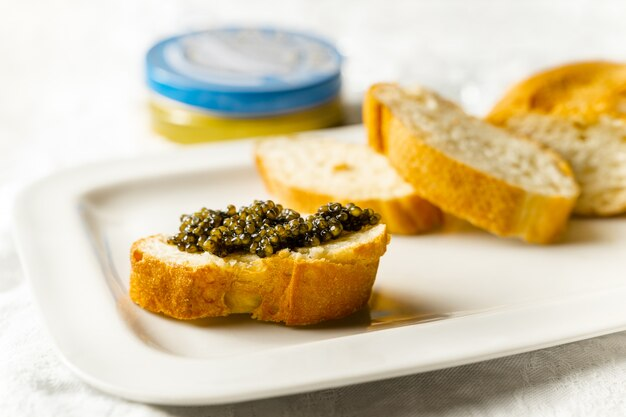

Home
Caviar On Toast

Description
This dish is the image of simplicity. A true look into
the duality of class. Expensive fish eggs on top and
cheap, but delicious, bread on the bottom. Art imitates life.
Ingredients
Steps
- Cut french bread at a bias to expose more of the surface. Place pieces on a baking sheet.
- Set oven to broil and lightly toast the bread.
- Allow the bread to cool and let the caviar come up to room temp.
- Use a knife or spoon to scoop caviar and spread it across the toast.